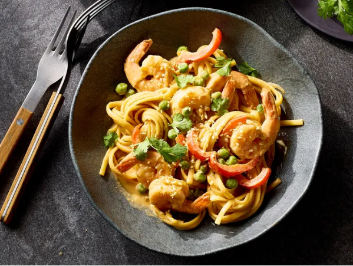

Shrimp Stir-Fry Noodles with Peanut Sauce

Description
No rice noodles? No problem. Linguine is an excellent stand-in for this Sriracha-spiced peanut sauce. This stir-fry is loaded with shrimp, bell peppers, and peanuts for a filling and speedy dinner.
Ingredients
- 8 ounces linguine pasta
- 1/2 cup creamy peanut butter
- 2 tablespoons less-sodium soy sauce
- 2 tablespoons pure maple syrup
- 2 tablespoons lemon juice
- 2 teaspoons Sriracha, plus more for serving
- 1 teaspoon ground ginger
- 1 tablespoon vegetable oil
- 1 onion, cut into thin wedges
- 1 red bell pepper, cut into bite-sized strips
- 1 pound frozen large shrimp, thawed, peeled, and deveined
- 1 cup frozen peas
- fresh cilantro and/or toasted sesame seeds, for garnish
Steps
- Bring a large pot of lightly salted water to a boil. Cook pasta until tender with a bite, 9 to 11 minutes, or according to package directions. Reserve 1/2 cup cooking water; drain.
- To make the peanut sauce: Whisk together peanut butter, soy sauce, maple syrup, lemon juice, 2 teaspoons Sriracha, ginger, and 2 tablespoons reserved cooking water.
- Heat oil over medium-high heat in a very large skillet. Add onion and bell pepper. Cook and stir until softened, 4 minutes. Add shrimp and peas. Cook and stir until shrimp is opaque, 3 to 4 minutes.
- Add pasta and peanut sauce to skillet. Toss to combine. Cook until heated through, 1 to 2 minutes, adding additional pasta water as needed to reach desired sauce consistency. Garnish with cilantro and/or sesame seeds. Serve with Sriracha.
Home